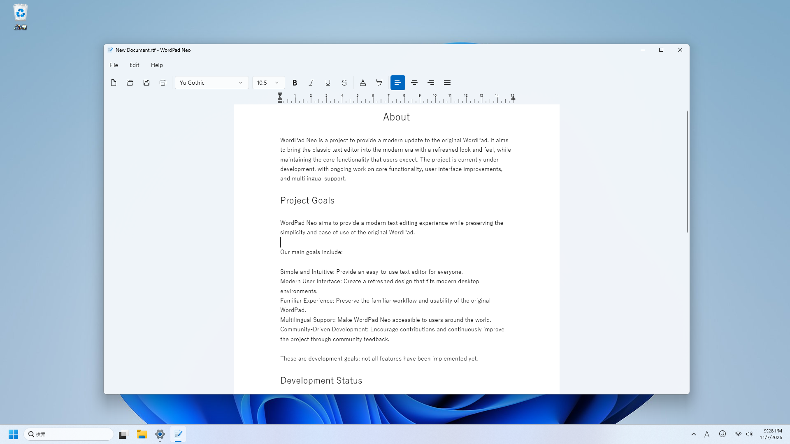

Open source / Windows
WordPad Neo
WordPad Neoは、Windows向けのオープンソースの文書エディターです。従来のWordPadに着想を得た操作性と、現代のWindows環境に合わせたユーザーインターフェースを目指して開発されています。
開発中のプロジェクトです。実装済みの機能、対応形式、配布状況はリポジトリでご確認ください。
スクリーンショット

開発状況
機能の実装状況や既知の問題は、GitHubのコミット履歴とIssuesで確認できます。開発版を使用する場合は、重要な文書を事前にバックアップしてください。
関連リンク
WordPad NeoはMicrosoftの公式アプリケーションではありません。